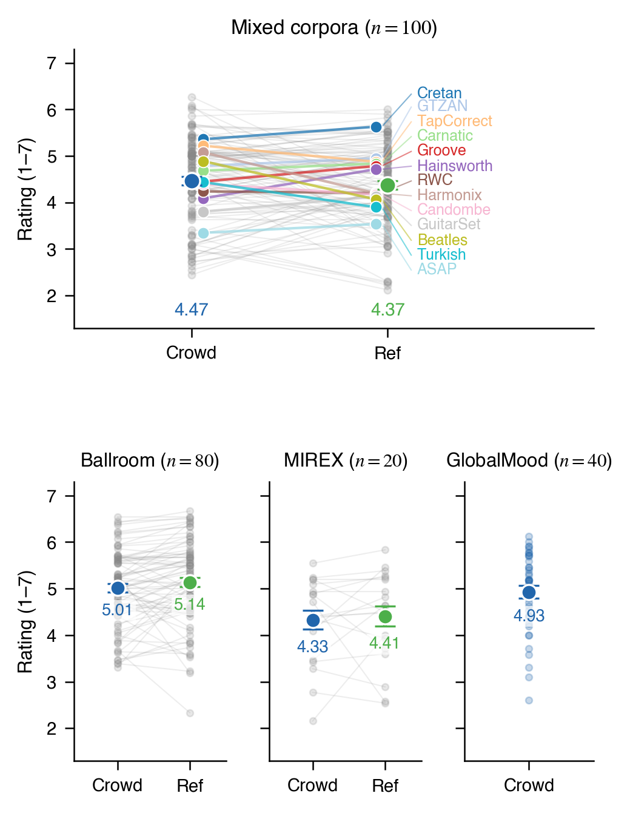
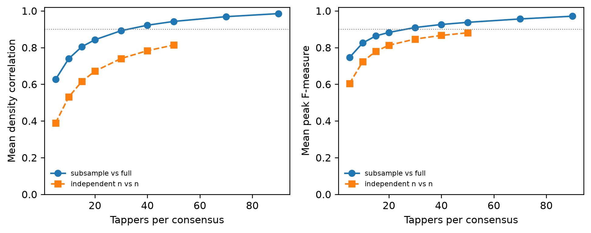

Companion to the ISMIR 2026 paper "GlobalTap: Globally Diverse Beat Tracking Benchmark via Crowdsourced Tapping." This page collects supplementary figures, tables, and a per-corpus rating breakdown.
supplementary.html locally — all media plays in any
browser.${PROJECT_ROOT}.

The 100-excerpt Mixed-corpora panel comprises 13 source corpora. Wilcoxon signed-rank tests compare excerpt-level Crowd and Reference means within each source, with Benjamini–Hochberg correction across the 13 tests. None remain significant at α = .05 after correction.
| Source corpus | n | Crowd | Ref | Δ | p (Wilcoxon) | pBH | dz |
|---|---|---|---|---|---|---|---|
| ASAP | 8 | 3.35 | 3.54 | −0.19 | .742 | .877 | −0.20 |
| Beatles | 8 | 4.89 | 4.07 | +0.82 | .055 | .178 | +0.83 |
| Candombe | 13 | 4.40 | 4.17 | +0.23 | .733 | .877 | +0.20 |
| Carnatic | 4 | 4.69 | 4.84 | −0.15 | .625 | .877 | −0.30 |
| Cretan | 3 | 5.36 | 5.63 | −0.27 | .500 | .812 | −0.80 |
| Groove (MIDI) | 8 | 4.45 | 4.79 | −0.33 | .312 | .580 | −0.44 |
| GTZAN | 8 | 4.79 | 4.95 | −0.16 | .844 | .914 | −0.23 |
| GuitarSet | 8 | 3.81 | 4.13 | −0.32 | .031 | .135 | −0.75 |
| Hainsworth | 8 | 4.09 | 4.72 | −0.63 | .008 | .102 | −1.31 |
| Harmonix | 8 | 5.08 | 4.20 | +0.88 | .078 | .203 | +0.74 |
| RWC | 8 | 4.24 | 4.20 | +0.04 | .938 | .938 | +0.04 |
| TapCorrect | 8 | 5.22 | 4.88 | +0.34 | .250 | .542 | +0.44 |
| Turkish | 8 | 4.44 | 3.90 | +0.54 | .016 | .102 | +1.39 |
Crowd and Ref columns are mean per-excerpt ratings on the 1–7 scale. Δ = Crowd − Ref. p from Wilcoxon signed-rank on excerpt-level means. pBH is the Benjamini–Hochberg-adjusted p-value across the 13 corpus tests.
Across the 200-excerpt GlobalTap benchmark and the 240-excerpt validation set, 1,498 tapping participants contributed 36,970 trials, and a separate panel of 130 approved listener raters contributed 6,487 ratings on the 240 validation excerpts.
Recruitment and exclusions (benchmark panel). 2,279 people
began a session across the eleven Prolific exports that make up the
benchmark panel. 868 did not pass the tapping performance check,
139 declined the audiovisual consent step, and
515 left before finishing, leaving 757 completed and approved sessions.
Of those, 746 contributed at least one usable trial. At the trial level, 23,493 of
28,945 recorded trials passed the recording, marker-analysis, and post-trial
checks. One trial had fewer than three taps after cleaning, leaving 23,492
trials for the period and phase analyses. The per-export breakdown sits with the
original session exports, which are not included (see
data/SOURCES.md). The taps themselves are released in
data/taps/. The
listener-rating panel retained 130 of 139 starts, and those 130 raters
contributed all 6,487 reported ratings.
| Panel | Reference source | Excerpts | Tappers | Median tappers / excerpt | Trials |
|---|---|---|---|---|---|
| Ballroom | Expert beat grids | 80 | 250 | 40 | ~3,800 |
| Mixed corpora | 13 source corpora | 100 | 104 | 36 | ~3,550 |
| MIREX | Lab-tapper consensus (40 participants) | 20 | 102 | 67 | ~1,350 |
| GlobalMood validation | None (absolute-quality check) | 40 | 296 | 110 | ~4,400 |
| GlobalTap benchmark | Crowd-derived | 200 | 746 | 117 | ~23,500 |
| Total | — | 440 | 1,498 | — | ~37,000 |
The trial totals and median number of tappers per excerpt include only trials that passed the recording, marker, and post-trial checks.
| Variable | Distribution |
|---|---|
| Age (years) | M = 34.8, SD = 11.6 |
| Gender | 52.7 % female, 44.6 % male, 2.7 % non-binary / undisclosed |
| Years of formal musical training | median 1 (IQR 0–4), with 33 % reporting none and 9 % reporting ≥ 10 years |
| Country-panel medians (training) | 1–6 years across panels |
| Gold-MSI (abbrev. 25-item, 1–7) | overall M = 4.45, SD = 0.38, with country-panel means from 4.19 to 4.66 |
Country-panel medians for the 10-country GlobalTap benchmark are comparable across panels and span 1–6 years of formal musical training.
The eight cases below cover excerpts of varying difficulty: three illustrate the structural divergences described in §3.6 (a phase offset, a tactus-level alternative, and bimodal pooled tapping), one is a high-consensus contrast case, and four are simple-alignment excerpts where the KDE peak tips track the optimizer beat grid throughout the song and Crowd / Reference clicks are closely aligned.
Each video concatenates the Crowd-consensus click overlay, then the
Reference-annotation click overlay, back-to-back (~30 s total). If a
video fails to load, the same excerpts are available as separate
crowd_gs/gt click-overlay MP3s in
audio_demos/.
Case-study excerpts — structural-divergence set:
proyecto.1992_lobo_06 (Candombe phase offset),
Albums-Chrisanne3-09 (Ballroom Viennese Waltz tactus),
Media-105914 (Ballroom bimodal pooled tapping). Alongside them we
release one high-consensus contrast case,
Albums-AnaBelen_Veneo-13 (Ballroom, Crowd ≈ Reference).
Simple-alignment set:
gtzan_disco_00000 (GTZAN Disco),
054_youtube_UgL4N4Hf1dk (TapCorrect Pop),
Albums-Latin_Jam-04 (Latin Ballroom), and
cretan1 (Cretan). Source-corpus locations are documented in
data/SOURCES.md.
Multiplicity. Corrections are applied within each family of
tests, Benjamini–Hochberg across the 13 mixed-corpus rating comparisons
(§2 above), and across all ten metric comparisons mir_eval
returns for madmom versus Beat This!.
The excerpt-level associations reported in the
paper's §3.3 are uncorrected in the text, and every association that is
significant there remains significant after Benjamini–Hochberg correction
within that family. The country-panel comparisons in §5.2 are FDR-corrected
across all 45 pairs.
Figure S2 shows convergence of participant-normalized tapping KDEs and their extracted peaks. Compared with the full consensus, KDE correlation reached .90 at 40 tappers and peak F-measure reached .90 at 30 tappers. At 90 tappers, the values were .985 and .971. The full consensus contains 114–120 tappers per excerpt (median 117).
A separate analysis ran independent groups through KDE, peak extraction, and optimization. Final-grid F-measure was .893 at N=20 and .918 at N=50. Agreement on period class was .850 and .885, respectively.

For each excerpt, we compared each panel's typical tapping period with a reference built from the other nine panels' typical (median) period on that same excerpt. Each trial was then classified as double rate (ratio .35–.65), matched rate (.80–1.25), half rate (1.75–2.25), or other/unclear.
Panel differences were clearest in which metrical level listeners chose.
Japan showed the least double-rate and most half-rate tapping of any panel
(7.5% / 20.1%). Egypt showed the opposite extreme, with the most
double-rate and least half-rate tapping (28.1% / 9.4%). After accounting for
differences between excerpts, participant-level permutation tests found that
metrical choice varied across panels (p<.001). Tap timing (phase)
showed no consistent differences across panels (p=.152). Of the 45 pairwise panel
comparisons, 2 survived FDR correction (Japan–Mexico and
Brazil–Japan, both q=.045), so we describe the phase
evidence as weak rather than absent
(panel_tests/phase_pairwise_panel_tests.csv).
These comparisons are between recruitment panels on this sampled excerpt
set, not against an expert or culturally authoritative ground truth. We
grouped participants by where they were recruited, which may not reflect
the music they are enculturated to, and we did not measure how familiar
they were with individual excerpts.
We also asked whether tapping coherence is higher when an excerpt's source country matches the panel that tapped it. Across the five source countries with 20 benchmark excerpts each (US, KR, FR, MX, EG), an analysis that accounted for differences between excerpts and panels, and treated measurements from the same excerpt as related, estimated a match effect of +0.066 ISTC units (95% CI [−0.030, +0.161], two-sided p=.179), providing no reliable evidence of an own-country advantage.
This analysis includes all 180 excerpts with independent expert beat references. Excerpts are grouped by the dominant Crowd period relative to the reference. Rating differences are excerpt-level Crowd minus Reference means. An excerpt is classified as matched, double, or half rate when its crowd-to-reference period ratio falls within ±0.15 octaves (about ±11%) of 1×, 0.5×, or 2×, respectively. All other ratios are classified as non-integer alternatives. All nine half-rate excerpts favored Crowd, but double-rate and non-integer cases had no consistent direction.
| Period relation | n | Crowd higher | Median difference |
|---|---|---|---|
| Matched rate | 145 | 51 | −.143 |
| Crowd half rate | 9 | 9 | +.748 |
| Crowd double rate | 14 | 7 | −.238 |
| Non-integer alternative | 12 | 7 | +.393 |
Standard mir_eval metrics were computed with the GlobalTap
consensus beat sequence as the reference and each tracker's
beats as the estimate. The analysis therefore asks how each tracker agrees
with the crowd consensus. Results use the 198 excerpts evaluable for both
trackers. Two Beat
This! outputs with fewer than two beats in the 10–25 s window were excluded
from paired comparisons.
Following Davies, Degara & Plumbley (2009), CML is correct metric level
and AML is any metric level, which credits double, half, and offbeat
interpretations, each scored over the longest continuously correct stretch
(CMLc/AMLc) or all beats (CMLt/AMLt), along with information gain, which
measures how far the spread of beat errors departs from uniform, all
computed with mir_eval defaults.
| Metric | madmom | Beat This! |
|---|---|---|
| CMLc | .797 | .621 |
| CMLt | .807 | .636 |
| AMLc | .947 | .908 |
| AMLt | .956 | .935 |
| Information gain | .669 | .643 |
Paired stem-level tests favored madmom for all five metrics: CMLc, CMLt, and information gain at FDR q<.001, AMLc at q=.011, and AMLt at q=.024.
Pooled (pre-optimization) ISTC and pipeline-output CV were both associated
with tracker–crowd agreement on this benchmark: ISTC with madmom
(ρ=.39, p<.0001) and Beat This! (ρ=.27, p=.0001).
CV with both Beat This! (ρ=−.24, p=.0006) and madmom
(ρ=−.18, p=.009). Script:
supplementary_analyses/istc_cv_tracker_correlations/run_pooled_istc_cv_tracker_correlations.py.
Pipeline settings were selected during development using checks
and sensitivity analyses on the validation corpora (Ballroom, the mixed
corpora, and MIREX), then used unchanged for all reported analyses,
including the GlobalTap benchmark. Varying each setting one at a
time by 18–50% across all 240 validation excerpts produced grids with
F-measure .947–1.000 against the reported grids,
with the tactus unchanged in 92.1–100% of cases. Each setting and the reason for
its value are listed in
METHOD_PARAMETERS.md.
Full CSVs, exclusion records, and scripts for these analyses are
available in supplementary_analyses/.
The full pipeline source — every stage, the paper's
optimizer, configs, and figure-regeneration scripts — is provided
in this companion repository. The repository's README.md
documents pipeline architecture and commands to reproduce the results,
including a figures-only path that needs no raw audio or tapping data
and a full re-run path from raw inputs. The consensus beat annotations are in
data/annotations/ (200 benchmark and 240 validation excerpts, one
beat time per line) and the de-identified benchmark taps behind them are in
data/taps/.
Repository:
https://github.com/williambotticelli-wells/GlobalTap
This supplementary HTML:
https://williambotticelli-wells.github.io/GlobalTap/supplementary.html
GitHub Pages serves this document with figures loaded inline. For offline viewing, download the entire repository so relative figure and analysis paths remain available.
ISMIR 2026 companion supplementary. Code released under MIT. Derived per-stem CSVs released under CC BY 4.0.